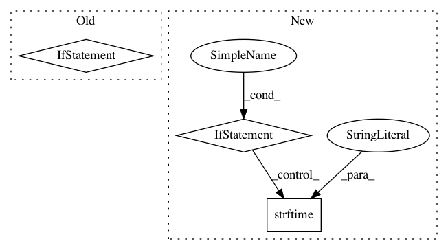

266327019a995345a03731dabf180914432089bf,deepplantphenomics/loaders.py,,_get_split_mask,#Any#Any#Any#Any#Any#Any#,56
Before Change
mask = []
// If there is no previous mask or we"re forcing it, we"ll build one
if not mask:
print("{0}: {1}".format(datetime.datetime.now().strftime("%I:%M%p"), "Building new partition mask."))
mask = [0] * n_label
val_mask_num = 1 // this changes depending on whether we are using testing or not
val_start_idx = 0 // if no testing then we idx from beginning, else we change this if there is testing
if test_ratio != 0:
// creating a mask [1,1,1,...,0,0,0]
num_test = int(n_label * test_ratio)
mask[:num_test] = [1] * num_test
val_mask_num = 2
val_start_idx = num_test
if validation_ratio != 0:
// if test_ratio != 0 then val_num_mask = 2 and we will create a mask as [1,1,1,...,2,2,2,...,0,0,0,...]
// otherwise we will only have train and validation thus creating a mask as [1,1,1,...,0,0,0]
num_val = int(n_label * validation_ratio)
mask[val_start_idx: val_start_idx + num_val] = [val_mask_num] * num_val
// If we"re using a training augmentation set, add them to the training portion
if n_augmentation != 0:
mask = mask + ([0] * n_augmentation)
// make the split random <-- ESSENTIAL
random.shuffle(mask)
// save the mask file in current directory for future use
with open(mask_name, "w+", encoding="utf-8-sig") as mask_file:
for entry in mask:
mask_file.write(str(entry) + "\n")
return mask
def label_string_to_tensor(x, batch_size, num_outputs=-1):
After Change
mask.append(int(line.rstrip()))
print("{0}: {1}".format(datetime.datetime.now().strftime("%I:%M%p"), "Loaded previous partition mask"))
if len(mask) == n_label:
return mask
else:
print("{0}: {1}".format(datetime.datetime.now().strftime("%I:%M%p"),
"Previous partition mask is mismatched to current dataset size"))
except FileNotFoundError:
print("{0}: {1}".format(datetime.datetime.now().strftime("%I:%M%p"),
"Failed to read previous partition mask"))
In pattern: SUPERPATTERN
Frequency: 3
Non-data size: 3
Instances
Project Name: p2irc/deepplantphenomics
Commit Name: 266327019a995345a03731dabf180914432089bf
Time: 2020-02-11
Author: dbl599@mail.usask.ca
File Name: deepplantphenomics/loaders.py
Class Name:
Method Name: _get_split_mask
Project Name: catalyst-cooperative/pudl
Commit Name: 4296d854f38a7544eb02cd72d9cdb11e215051ce
Time: 2018-07-05
Author: karldw@users.noreply.github.com
File Name: pudl/init.py
Class Name:
Method Name: _ETL_cems
Project Name: home-assistant/home-assistant
Commit Name: 96bf8bc395f7c6bccc7b2f00e03f170acfa39c4c
Time: 2020-01-12
Author: yarmo@protonmail.com
File Name: homeassistant/components/nederlandse_spoorwegen/sensor.py
Class Name: NSDepartureSensor
Method Name: device_state_attributes